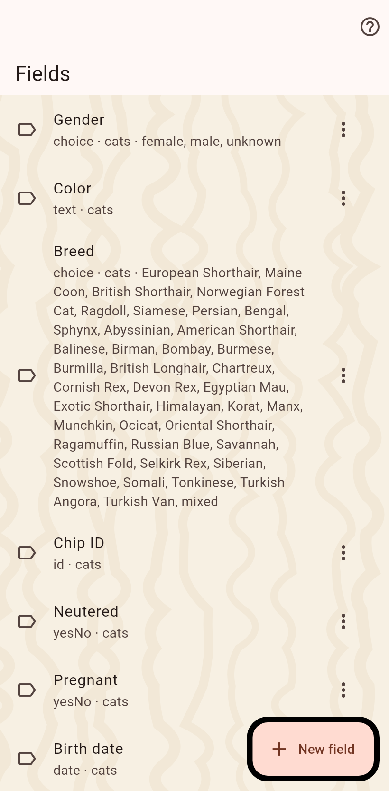

The fields your catalog uses, one list for cats and homes. Rename them, change the options of a choice field, or add your own.

Text, yes or no, a date that may be only a month or a year, a number, a measurement with a dimension and a unit, a choice with your options, a place, an ID, a reference to another cat, and tags. An ID field can point at a registry, so the number on a cat opens the registry in the browser.
On a cat's or a clowder's page while editing, at the bottom: "New field". Here, in the catalog's settings, the whole list is managed. Fields belong to the catalog: every device syncing it sees the same ones.
A value is marked private in its editor. It stays on this device and leaves it only when a share has the private switch on; a partner sees a lock on the empty row. Privacy is about a value, never about whether a cat exists.
Every starter field with its type is listed in the fields catalogue.